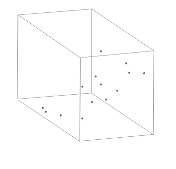
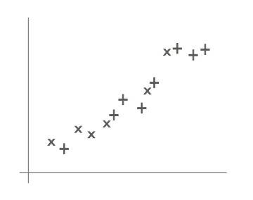
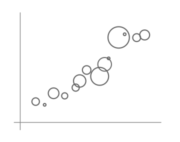
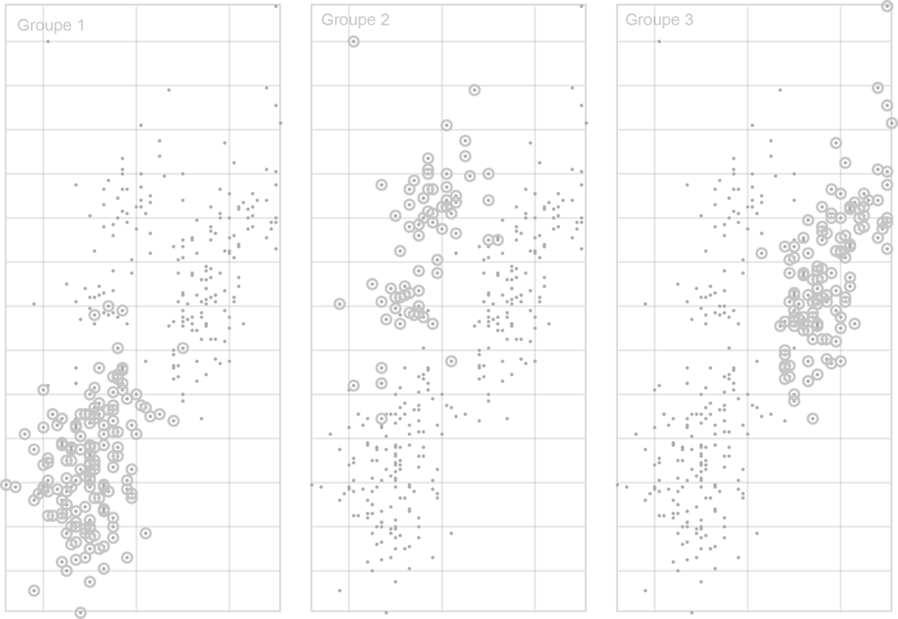

Historique
Nous pourrions attribuer le nuage de points à Francis Galton (1863). Il représente des observations (la taille d’un enfant et de ses parents) sous forme de points sur un repère cartésien, il a constaté une corrélation : plus ses parents sont grands, plus il y a de chance que leur progéniture le soit. Graphiquement, il cherche à faire passer une droite qui passe au plus près de points du nuage. Si Galton propose le modèle de régression linéaire, la représentation par nuage de point est plus ancienne.
Le premier nuage de points pourrait être inventé par l’astronome germano-britannique, William Herschel, le découvreur de l’astre de Georges III, plus connu sous le nom d’Uranus. Dans son article de 1833, il construit un nuage du point pour prévoir l’orbite d’une étoile double dans la constellation de la Vierge. Il fait figurer la position apparente de l’étoile dans le ciel et l’année d’observation. Il propose de tracer une courbe qui peut permettre de définir la prochaine position de l’étoile.
- Timeline de l’histoire de la dataviz
Pourquoi des nuages de points
Pourquoi les utiliser?
- Les nuages de points appelés aussi diagrammes de dispersion, conviennent pour examiner la relation entre deux (ou plus) variables.
- Ils sont rapides à construire.
- Faciliter l’exploration des données.
- Analyser visuellement la relation entre deux variables.
- Ils sont faciles à comprendre. Ce sont des diagrammes très utilisés. D’après Tufte (1983), plus des trois quarts des publications scientifiques utilisent les nuages de points.
- Dans un second temps, les nuages de points permettent de :
- Évaluer l’ajustement d’un modèle de régression.
- Prédire la valeur d’une variable inconnue.
- Voir les valeurs aberrantes et les observations inhabituelles.
- Ils peuvent aussi être utilisés pour représenter une série temporelle quand les mesures ont été prises à des temps irréguliers. Au contraire, si sur l’axe X, les intervalles sont réguliers, il est possible d’utiliser un diagramme en lignes.
Pourquoi ne pas les utiliser?
- Il est moins adapté à des variables qualitatives.
- Lorsqu’il n’y a aucune corrélation, utiliser un nuage de point peut être trompeur : il n’y a aucune relation entre les variables choisies. Dans ce cas, un diagramme en barre est plutôt souhaitable.
- Ne pas confondre corrélation et causalité. Les phénomènes peuvent être liés, mais cela ne veut pas dire qu’il est causé seulement par une variable. D’autres facteurs peuvent jouer. Il ne faut pas tirer de règle générale.
- Les variations de l'échelle utilisée sur les axes peuvent altérer la perception de la corrélation.
Le nuage de points et ses variantes
A - Nuages de points à deux variables
Après avoir défini un repère cartésien, sur l’axe vertical, les ordonnées, nous plaçons la variable dite dépendante, celle qui va permettre être expliquée par la variable dite indépendante. Par exemple, si nous essayons d’expliquer la hauteur de l’arbre par la taille de son tronc, la hauteur est sur l’axe vertical et la taille sur l’axe horizontal.

B - Nuages de points à plus de deux variables
Nuages de points en 3D
lorsque l’on a plus de deux variables à représenter dans le jeu de données, un graphe en trois dimensions permet de représenter un jeu de données de trois variables

Avantages
- Présenter rapidement un jeu de données avec 3 variables
- Adapté dans le cadre d’une visualisation interactive et exploratoire
Limitations
- Dans un cadre d’une visualisation statique ou plus généralement, les informations que vous jugez pertinentes doivent être présentées facilement à l’utilisateur, sinon ce dernier risque de passer à côté du message que vous voulez lui faire passer.
- Choisir les bons angles de vue
- Mettre les points intéressants en évidence, soit avec une légende ou en couleur
- Le graphe n’est pas toujours lisible compte tenu de la superposition des points et de la perspective.
- Enfin, la mise en œuvre peut être complexe
- C’est la variable graphique la plus visuelle
- Nombre de couleurs
- Adapté aux personnes qui ne peuvent pas percevoir facilement la couleur (daltoniens) ou si le visualisation doit être imprimée en noir et blanc
- Moins lisible que la couleur
- Permet de représenter de grandes variations de valeurs à travers le rayon des cercles
- Moins lisible que la couleur ou les symboles
- Choix délicat de l’échelle des rayons des cercles pour éviter les superpositions
Nuages de points en couleur
Pour représenter la troisième variable et rester en deux dimensions, La variable graphique couleur est utilisée.

Avantage
Limitation
Nuage de points avec différents symboles
Pour représenter la troisième variable et rester en deux dimensions, La variable graphique symbole est utilisée.

Avantage
Limitation
Nuage de points avec différentes tailles
Pour représenter la troisième variable et rester en deux dimensions, La variable graphique taille est utilisée.

Avantage
Limitations
C - Nuages de points - multiples petits
Dans toutes les solutions précédentes, les points peuvent se superposer ou les groupes de points créés peuvent être mélangés. Il est possible de limiter ce problème en utilisant de “multiples petits”. La troisième variable constitue alors le séparateur des différents graphes en multiples petits.

Testez par vous-même
Nous utilisons les données sur les pingouins d'Allison Horst. C'est un jeu de données recueilli par le docteur Kristen Gorman et maintenu par Allison Horst qui décrit les pingouins de la base de recherche américaine Palmer en Antarctique. Chaque pingouin est caractérisé par son espèce, son île d'origine, la longueur et l'épaisseur de son bec, la longueur de ses nageoires, sa masse et son sexe.
Choisissez la ou les variables à représenter
Explorez un grand nombre de données - Résultats du marathon de New York en 2011
Recommandations
Les données
- variables numériques
Recommandation 1
- Ajouter des cercles ou des annotations qui permettent de mettre en évidence des zones d’intérêt et une courbe de régression pour identifier des liens entre les variables
Recommandation 2
- Quand la densité des points est trop grande, jouer sur la transparence ou modifier le symbole en fonction de la densité.
Recommandation 3
- Préférer les multiples petits pour améliorer la lisibilité
- Lorsque le nombre de points représentés est trop élevé
- Quand il y a trop de variables en jeu.
Outils
Sélection d’outils
Nous vous proposons des diagrammes, des variantes et des lignes directrices, mais peut-on les mettre en œuvre concrètement avec les outils graphiques ?
La liste des logiciels de visualisation de données est longue et en faire une analyse exhaustive serait fastidieuse et peu pratique à utiliser. Nous avons choisi quelques outils connus, facile d’accès pour des débutants et qui permettent d’exporter les graphiques dans un format vectoriel .svg (sauf pour l’outil Tableau Software).
Dans ce format, les diagrammes se composent d’un ensemble d’objets graphique (polygones, lignes, cercles et textes) qu’il est possible d’importer dans des outils de présentation tels que PowerPoint, Draw ou des outils vectoriels dédiés comme Illustrator ou son équivalent libre Inkscape. Il est alors possible de faire manuellement des modifications qui ne sont pas ou difficilement réalisables avec l’outil de dataviz.
Exemples
Les exemples qui sont proposés présentent des réalisations basiques. Pensez à sélectionner l’onglet correspondant au diagramme à barres.
EXCEL
En savoir +
- Tous les types de diagrammes à barres sont réalisables (n’hésitez pas à regarder des tutoriels pour les construire si besoin).
- Pour transférer un graphique au format SVG, sélectionnez le graphique dans l’onglet puis faire un copier-coller vers l’outil de dessins vectoriels ou de présentation.
GOOGLE SHEET (on line)
En savoir +
- Tous les types de diagrammes à barres sont réalisables (n’hésitez pas à regarder des tutoriels pour les construire si besoin).
- Pour transférer un graphique au format SVG, sélectionnez le graphique dans l’onglet puis en haut à droite du graphique, cliquez sur l’icone puis télécharger au format SVG.

TABLEAU SOFTWARE
Le site Tableau public propose de nombreux exemples de réalisation de nuages de points
En savoir +
- L’outil Tableau ne propose pas d’exportation au format SVG mais au format PDF. Dans ce format, avec les outils vectoriels, l’extraction des formes du graphique reste possible mais pas très pratique.

CALC OpenOffice
En savoir +
- Tous les types de nuages de points sont réalisables (n’hésitez pas à regarder des tutoriels pour les construire si besoin).
- Pour transférer un graphique au format SVG, sélectionnez le graphique dans l’onglet puis faire un copier-coller vers l’outil de dessins vectoriels ou de présentation.

RAWgraph (on line)
En savoir +
- Cet outil en ligne simple ne permet pas de réaliser tous les nuages de points.
- Sa simplicité d’utilisation et sa fonction d’exportation au format SVG le place comme une possible alternative à des outils plus complexes comme les tableurs.
Les langages de programmation
Sachez enfin, qu’avec les librairies graphiques associées aux langages de programmation R, Python ou JavaScript, il est possible de réaliser tous les diagrammes et les recommandations.
Liens vers le code de graphiques basiques :
JavaScript Observablehq (1)
R (R Graph Gallery)(2),
Python (Python Graph Gallery)(2),
JavaScript d3.js (d3.js Graph Gallery)(2) .
(1) Notebooks observablehq de l’association TDV
(2) Site de Yan Holtz (en anglais) et
Le site The Data Visualization Catalogue propose aussi des exemples réalisés avec de multiples outils ou langages de programmation (en anglais).